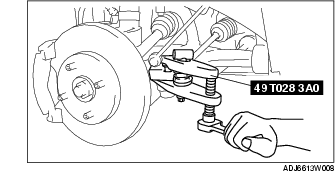

Steering gear and linkage removal/installation
- • Performing the following procedures without first removing the ABS wheel-speed sensor may possibly cause an open circuit in the wiring harness if it is pulled by mistake. Before performing the following procedures, remove the ABS wheel-speed sensor harness (axle side) and fix it to an appropriate place where the harness will not be pulled by mistake while servicing the vehicle.
1. Remove the steering shaft cover.
2. Remove in the order indicated in the table.
3. Install in the reverse order of removal.
4. After installation, inspect the front wheel alignment and adjust it if necessary. (See FRONT WHEEL ALIGNMENT.)

.
|
1
|
Bolt (steering shaft)
|
|
2
|
Bolt (harness)
|
|
3
|
Connector
|
|
4
|
Snap pin
|
|
5
|
Nut (Tie-rod end)
|
|
6
|
Tie-rod end
(See Tie-rod End Removal Note.)
|
|
7
|
Stabilizer control link (upper side)
|
|
8
|
Lower arm ball joint
|
|
9
|
Bolt (No. 1 engine mount)
|
|
10
|
Front crossmember, front stabilizer, lower arm and steering gear component
|
|
11
|
Dust cover
|
|
12
|
Steering gear and linkage
|
Tie-rod End Removal Note
1. Remove the tie-rod end locknut.
2. Separate the tie-rod end from the steering knuckle using the SST.

Bolt (No.1 Engine Mount) Removal Note
1. Loosen the transaxle side No.1 engine mount installation bolt.
2. Remove the crossmember side No.1 engine mount installation bolt.
Front Crossmember, Front Stabilizer, Lower Arm And Steering Gear Component Removal Note
1. Remove the front crossmember, front stabilizer, lower arm and steering gear as a single unit using a jack.

Steering Gear and Linkage Installation Note
1. Loosely tighten bolts.
2. Tighten the mounting bracket bolts to the specified torque in the order shown.

Tightening torque
Front Crossmember, Front Stabilizer, Lower Arm And Steering Gear Component Installation Note
1. Install the front crossmember, front stabilizer, lower arm and steering gear as a single unit using a jack.

Bolt (No.1 Engine Mount) Installation Note
1. Install the crossmember side No.1 engine mount installation bolt.
2. Tighten the transaxle side No.1 engine mount installation bolt.
Tightening torque- Transaxle side: 54.0-61.0 N·m {5.51-6.22 kgf·m, 39.9-44.9 ft·lbf}
- Crossmember side: 44.0-61.0 N·m {4.49-6.22 kgf·m, 32.5-44.9 ft·lbf